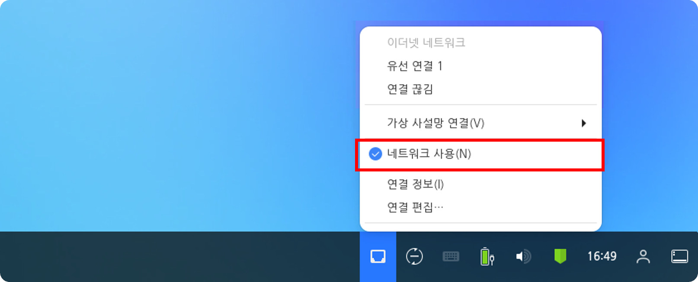
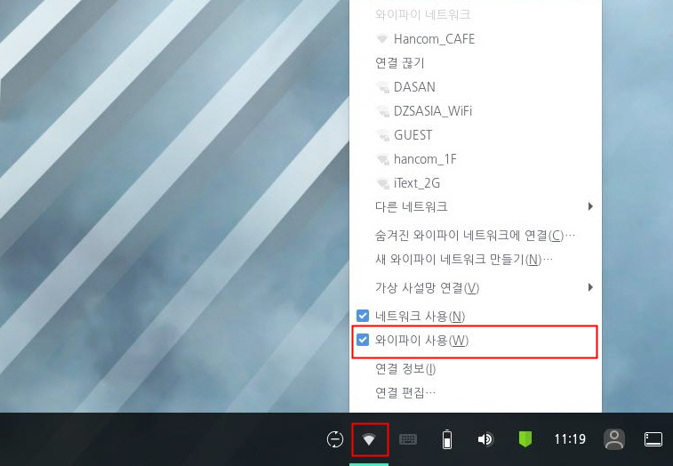
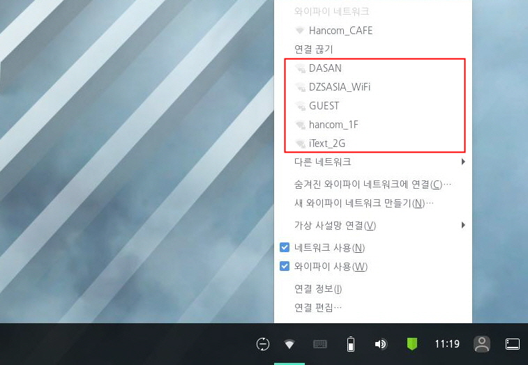
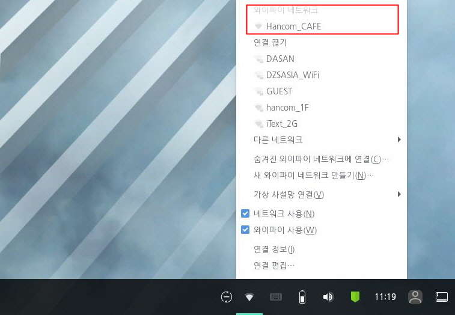

사용자의 컴퓨터가 와이파이를 사용할 수 있는 환경인 경우(노트북 또는 무선 랜카드 장착 등) 와이파이 사용 체크 박스를 활성화 하여 와이파이를 사용할 수 있습니다. 사전에 등록된 와이파이가 존재하는 경우 컴퓨터 재시작시 자동으로 등록된 와이파이로 연결됩니다. 다음 단계를 수행하여 와이파이 사용 여부를 설정합니다.1. 우측 하단의 [네트워크] (와이파이 사용 불가(유선 네트워크),
(와이파이),
(네트워크 미연결)) 아이콘을 클릭하여 네트워크 메뉴를 엽니다. 와이파이를 사용할 수 없는 환경인 경우 [와이파이 사용] 체크 박스를 확인할 수 없습니다.

와이파이 사용 가능

2. [와이파이 사용] 체크 박스를 체크하여 와이파이 연결을 활성화 할 수 있습니다. 3. [와이파이 사용] 체크 박스를 체크한 경우 사용가능한 와이파이를 리스트에서 확인할 수 있으며 연결된 와이파이를 [와이파이 네트워크]에서 확인할 수 있습니다.와이파이 리스트

와이파이 네트워크
